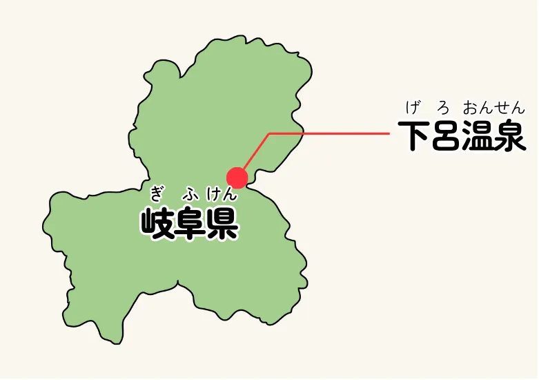
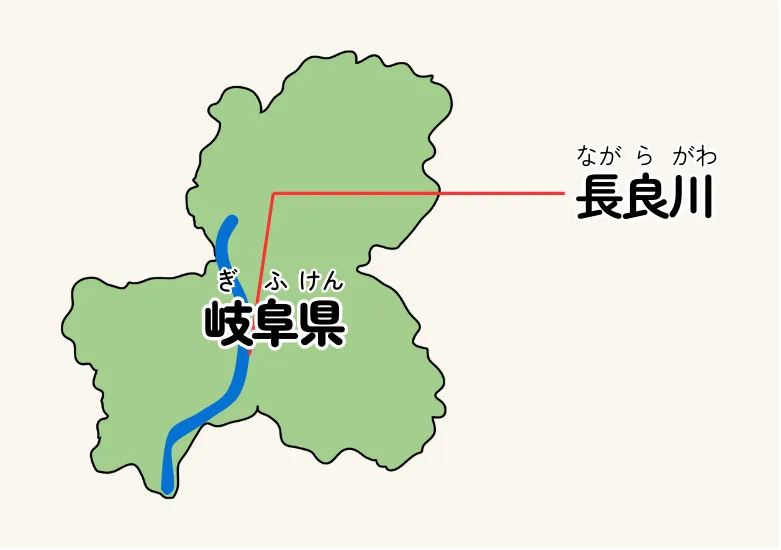

岐阜の名所紹介 下呂温泉

下呂温泉
サリー
下呂温泉
私が紹介するのは、全国的に有名な温泉の下呂温泉よ。下呂温泉は平安時代から続く由緒正しい温泉で、草津温泉や有馬温泉と並んで日本三名泉と呼ばれているわ。
長い歴史を持っているのだけど、温泉地の場所は時代ごとに移り変わっていて、最初は近隣の山の山頂に源泉があったとされるわ。
今と同じ飛騨川の河原に源泉が見つかった後も、洪水で寂れてしまったりしたこともあったそうよ。
今のJR高山本線の開業と共に復活した下呂温泉の特徴は、河原にある噴泉池と呼ばれる無料で入れる足湯よね。昔は全身入れたのだけど、マナーの悪化で足湯の利用だけになってしまったと聞いているわ。
岐阜の名所紹介 長良川

鵜匠
ジェンキンス
長良川の鵜飼
俺が紹介するのは長良川の鵜飼だ。鵜という鳥を使って川の魚をとる漁は日本全国でおこなわれてきたものだが、岐阜県の長良川で行われるものは特に有名だ。
長良川では、5月11日から10月15日にかけて鵜を使って、鮎をとっている。年に8回、宮内庁管轄の御料場でとった鮎は皇室に献上されている。
鵜飼は夜に篝火を焚いた船で川を航行して、灯りに驚いた鮎を鵜がすかさず咥えた時に、あらかじめつけられた首紐をたぐり寄せて船に戻し、喉につっかえた鮎を鵜使いが回収するというやり方が基本だ。岐阜市内には、これを極めた鵜匠が6軒ある。